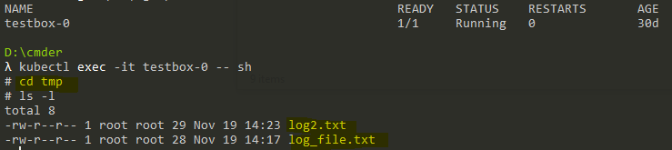

kubectl常用命令
kubectl是由Kubernetes提供，使用Kubernetes API与Kubernetes集群的控制平面进行通讯的命令行工具。熟练使用kubectl常用命令将能大大提高Kubernetes相关问题的排查效率。
备注：以下是以Windows作为本地机器的命令使用说明。
¶Kubernetes和本地之间的文件/文件夹拷贝
相关命令 [1]：
kubectl cp <file-spec-src> <file-spec-dest> [options]
假设目前有一个单容器pod testbox-0，在tmp目录下有2个txt文件。

¶拷贝Kubernetes文件到本地
参考命令：kubectl cp <pod-name>:<src-file-path> <dest-file-path>
如果要指定namespace的话，使用kubectl cp <namespace>/<pod-name>:<src-file-path> <dest-file-path>
现在我们将testbox-0 pod容器里tmp目录下的log_file.txt拷贝到本地的D:\temp目录下。
- 尝试命令
kubectl cp testbox-0:tmp/log_file.txt D:/temp/log_file.txt，发生报错error: one of src or dest must be a local file specification，应该是目标文件路径带了盘符D，我们将当前路径切换到D盘后再试。 - 去掉盘符后，尝试命令
kubectl cp testbox-0:tmp/log_file.txt ./temp/log_file.txt，命令执行完成没有报错，检查D:\temp目录发现了log_file.txt，文件拷贝成功。

- 如果是拷贝整个文件夹，命令只需指定到目录就可以，执行命令
kubectl cp testbox-0:tmp ./temp，文件夹拷贝成功。
¶拷贝本地文件到Kubernetes
只要将本地文件路径和pod容器里的路径交换一下位置，就可以做到将本地文件拷贝到Kubernetes的pod容器里。例如：
- 将本地文件拷贝到pod容器里：
kubectl cp ./test/test1 testbox-0:tmp/test1 - 将本地文件夹拷贝到pod容器里：
kubectl cp ./demo testbox-0:tmp/demo
¶滚动重启一个部署
通过滚动重启一个部署[2]，可以将该部署下的所有pod进行滚动重启，滚动重启可以避免服务中断。
相关命令：kubectl rollout restart deployment/<deployment-name>